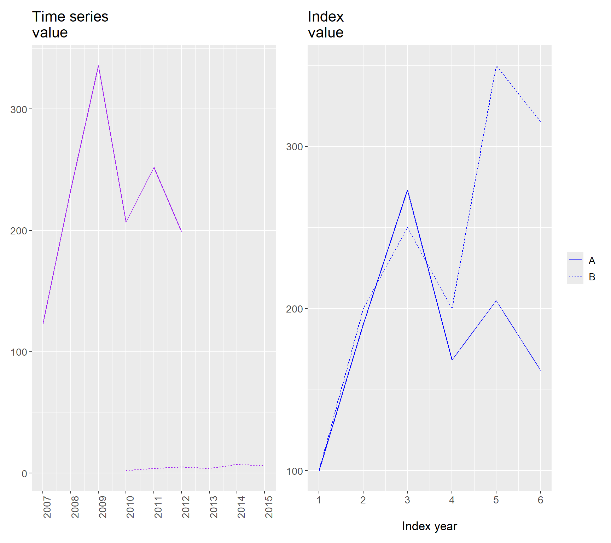

Chapter 3 Examples with Applications
This chapter provides examples of how mathematics can be applied in issues related to social science.
3.1 Interest
In section 2.15 we went through percent, hundredth, and per mille, thousandth. Now we will calculate how much the interest will be if we deposit money in a bank account with two percent interest per year. Since we deposit money in the bank, this may be described as lending money to the bank and the interest we receive on our account is the compensation that the bank gives us.
Two percent can be written with numbers as either 2 % or as \(0.02\). To calculate the interest we multiply this value with the amount of money we deposit in the account. Suppose we deposit 100 USD. The interest then becomes \(100*0.02=2\) USD. After one year we have 100 USD + the interest that the bank gives us: \(100+2=102\).
Another way to calculate this is to multiply \(100 \times 1.02=102\). We multiply our savings with 1 plus the interest rate 2%: \(1+0.02=1.02\). This shows how much money we have after the interest is added to our savings amount. If we let the money remain in the account for another year, we will next year receive interest on the amount 102. The result after year 2 is given by \(102 \times 1.02=104.04\). Another way to describe this:
\[ \begin{align} 102*1.02 & =\left(100*1.02\right)*1.02\\ & =100*1.02*1.02\nonumber \\ & =100*\left(1.02\right)^{2}\nonumber \\ & =104.04\nonumber \end{align} \]
Note that all rows in the equation give exactly the same result. On the third row we write together \(1.02*1.02\) as \(\left(1.02\right)^{2}\). This is read as \(1.02\) raised to the power of two and is a power expression, see section 2.8 .
3.2 Interest on interest
When interest is added to money that has already increased due to interest, this is called interest on interest, or compound interest or cumulative interest. Suppose we deposit 5,000 USD in a savings account where the annual interest is two percent. We let the money remain in the account for three years. The first year we receive the interest that is generated on our 5,000 USD. Our savings amount after the first year then becomes:
\[ \begin{align} \text{Savings after year 1} & =5,000*1.02\\ & =5,000*1+5,000*0.02\nonumber \\ & =5,000+100\nonumber \\ & =5,100\nonumber \end{align} \]
We here multiply the original amount with 1 plus the interest rate 0.02 since we shall calculate the total amount that we will have after the interest is paid out. The two following years we receive interest both on our original savings plus interest on the money we have received in interest previous years. Let us write it with one equation per year. After year 1 we have:
\[ \begin{align} 5,000*1+5,000*0.02 & =5,000+100=5,100 \tag{3.1} \end{align} \]
After year 2:
\[ \begin{align} 5,100*1.02 & =5,100+102=5,202 \end{align} \]
After year 3:
\[ \begin{align} 5,202*1.02 & =5,306.04 \end{align} \]
These three calculations can also be written in one and the same equation as:
\[ \begin{equation} 5,000*1.02*1.02*1.02=5,306.04 \end{equation} \]
Just as before, powers can be used to make this calculation even more compact. We set \(1.02\) as the base in a power expression and define the exponent equal to the number of years: 3. Our total amount after three years:
\[ \begin{equation} 5,000*1.02^{3}=5,306.04 \end{equation} \]
When we take a loan we instead have to pay interest on interest. Say for example that you use a credit card with \(12\%\) annual interest. A credit card allows you to borrow money from the bank when making purchases and pay interest on the loan. The interest is in this case added per month. To calculate the monthly interest we take the annual interest, \(12\%\), and divide by the number of months in a year, 12:
\[ \begin{align} \text{Interest per month: }0.12/12 & =0.01=1\% \end{align} \]
Say now that you use the credit card to shop for 20,000 and wait three months to pay. How much will the interest be? The interest starts in this example being added to your loan directly when you shop and is calculated at the beginning of each month on the debt that then applies. New interest is added to old interest for each month that the loan is not repaid. After one month:
\[ \begin{equation} 20,000*1.01=20,200 \end{equation} \]
After two months:
\[ \begin{equation} 20,200*1.01=20,402 \end{equation} \]
After three months:
\[ \begin{equation} 20,402*1.01=20,606.02 \end{equation} \]
Let us write this using a power expression. After three months your loan has grown to the following amount:
\[ \begin{equation} 20,000*1.01^{3}=20,606.02 \end{equation} \]
The interest cost for borrowing for three months on the credit card becomes in this case \(20,606.02–20,000=606.02\) USD. This phenomenon is called interest on interest or cumulative interest. The word cumulative refers here to that the interest is added and forms a sum, whereupon interest is added to that sum and so on. A related concept is cumulative sum, which describes a sum that is calculated per value in a series, including all values in the series up to that point. Table 3.1 shows some numbers and a column with a cumulative sum and a column with a regular sum.
| Observation number | Value | Cumulative sum |
|---|---|---|
| 1 | 23 | 23 |
| 2 | 32 | \(23+32=55\) |
| 3 | 11 | \(23+32+11=66\) |
| 4 | 14 | \(23+32+11+14=80\) |
| Sum: 80 |
3.3 Effective interest
According to the consumer credit law, lenders are obligated to inform about a loan’s effective interest rate. Effective interest rate is the total cost of a loan including any additional fees, calculated as annual percentage interest rate on the loan amount. Many loans come with additional fees, for example a fee for creating the loan (setup fee) or a fee for the lender to send bills (billing fee). In practice this means that when it says in an advertisement that you can buy something and pay “interest-free” later, you often in practice pay an effective interest rate despite it not being called interest.
A store offers you to buy a TV for 10,000 USD and postpone the payment without interest for 24 months. For this the store charges a fee of 700 USD and an administrative fee of 40 USD every month, totaling \(40\times24=960\). Total amount of extra costs:
\[ \begin{equation} 700+40\times24=1,660 \end{equation} \]
Expressed as a percentage of the loan (10,000 USD) this gives the effective interest rate:
\[ \begin{equation} \frac{1,660}{10,000}=16.6\% \end{equation} \]
Let us take another example. Various companies offer payday loans, paid out directly. A company offers you to borrow 10,000 USD at 40% nominal interest rate for 12 months. “Nominal interest rate” refers to the interest rate that is written out, for example in an advertisement. To find out what we really have to pay we must however calculate with all fees that are added. Nominal interest rate + any fees = effective interest rate. To the nominal interest rate is added 700 USD in setup fee, 700 USD in extension fee and 420 USD per month in billing fee. One twelfth of the nominal interest rate is added to the loan each month. We have nominal interest rate + setup fee + extension fee + the billing fees. Total amount to repay for a loan of 10,000 USD is then:
\[ \begin{align} & 10,000\times\left(1+\frac{0.4}{12}\right)^{12}+700+700+420\times12=\\ \approx & 10,000\times1.4821264+700+700+5,040=\nonumber \\ = & 14,821.26+700+700+5,040=\nonumber \\ = & 21,261.26\nonumber \end{align} \]
To get the effective interest rate we subtract the loan amount 10,000 from this sum and calculate how much the remainder is as a percentage of the loan amount:
\[ \begin{align} \frac{21,261.26-10,000}{10,000} & =\frac{11,261.26}{10,000}\approx112.6\% \end{align} \]
The effective interest rate for this loan is thus 112.6%. Some loans can have over 1,000 percent in effective interest rate.
3.4 Index
An index is a method to compare the development of a quantity. A common way to calculate an index is to compare values against a base year or a base level. We may choose whichever year we want to use as base year. Often one calculates index so that the index value for the base year is 100. The number 100 is arbitrarily chosen.
Table: Basis for index (#tab:underlag-for-index)
Time series A
| Year | 2007 | 2008 | 2009 | 2010 | 2011 | 2012 |
|---|---|---|---|---|---|---|
| Data | 123 | 234 | 336 | 207 | 252 | 199 |
| Time series B | Year | 2010 | 2011 | 2012 | 2013 | 2014 |
| — | — | — | — | — | — | — |
| Data | 2 | 4 | 5 | 4 | 7 | 6.3 |
By comparing two or more indexes (indices) it is easy to see relative differences. In table 3.2 we have the two time series A and B. For each year \(t\) an index can be calculated by dividing the value for this year with the value for the base year. Index year \(t\) is then:
\[ \begin{equation} \text{Index}_{t}=\frac{\text{Value}_{t}}{\text{Value}_{\text{base year}}}*100 \tag{3.2} \end{equation} \]
Now we shall create one index per time series, using the first year in each series as the base year. The index value for time series A year 2007 is:
\[ \begin{align} \text{Index A}_{2007} & =100*\frac{\text{Time series A}_{2007}}{\text{Time series A}_{2007}}=100*\frac{123}{123}=21.7 \end{align} \]
For the year 2010 we get:
\[ \begin{align} \text{Index A}_{2010} & =100*\frac{\text{Time series A}_{2010}}{\text{Time series A}_{2007}}=100*\frac{207}{123}\approx168.3 \end{align} \]
The last year for time series A is 2012:
\[ \begin{equation} \text{Index A}_{2012}=100*\frac{199}{123}\approx161.8 \end{equation} \]
For time series B the first year is 2010:
\[ \begin{align} \text{Index B}_{2010} & =100*\frac{\text{Time series B}_{2010}}{\text{Time series B}_{2010}}=100*\frac{2}{2}=100 \end{align} \]
The index value year 2015 for time series B:
\[ \begin{align} \text{Index B}_{2015} & =100*\frac{6.3}{2}=315 \end{align} \]
Figure 3.1 illustrate the two time-series A and B in two plots. In the plot to the left we show the original values, same as in table 3.2 . In the plot to the right we see the indexed versions of the two series. The first observation in the graph to the right is the base year for each time series. Try yourself to calculate index for the two time series using other base years.

Figure 3.1: Time series index
3.5 Population index
Indices can be used in many situations. Table 3.3 shows the size of the population for USA every tenth year 1950 – 2020. We will now calculate a population index with 1950 as base year. For 1950 we get the following index value:
\[ \begin{align} \text{Index}_{1950} & =\frac{154}{154}*100=1*100=100 \end{align} \]
For 1960 we get:
\[ \begin{equation} \text{Index}_{1960}=\frac{180}{154}*100=1.169*100=116.9 \end{equation} \]
In table 3.4 the results for all years are shown. Please check for yourself that the results are correct. Between 1950 and 2020 the US population increased by circa 120%: 220.1 – 100 = 120.1. In 2000 the population had increased by 82.5%, compared to 1950.
| Year | 1950 | 1960 | 1970 | 1980 | 1990 | 2000 | 2010 | 2020 |
|---|---|---|---|---|---|---|---|---|
| Population, millions | 154 | 180 | 208 | 230 | 253 | 281 | 311 | 339 |
| Source: Our World In Data |
| Year | 1950 | 1960 | 1970 | 1980 | 1990 | 2000 | 2010 | 2019 |
|---|---|---|---|---|---|---|---|---|
| Population index 1960 = 100 | 100,0 | 116.9 | 134.8 | 149.1 | 164.3 | 182.5 | 201.7 | 220.1 |
Let us also calculate the percentage change of the population size between each year. This will show the growth rate per ten-year period (per decade). We do this by calculating the difference between the two values for two different time points and dividing by the value for the earlier time point. We start with the difference in population size 1960 and 1950:
\[ \begin{align} \frac{180-154}{154} & =\frac{180}{154}-\frac{154}{154}\approx1.169-1=0.169 \end{align} \]
The results for all years are shown in table 3.5 . If we were to calculate percentage change for the index in table 3.4 we would get the same result. We can see this by inserting the definition of index from equation (3.2) into our equation for percentage change:
\[ \begin{equation} \text{Percent change between year }t\text{ and year }t-1=\frac{\text{value}_{t}}{\text{value}_{t-1}}-1 \end{equation} \]
We insert the definition of index for the two values:
\[ \begin{align} \frac{\left(\frac{\text{Value}_{t}}{\text{Value}_{\text{base year}}}\right)100}{\left(\frac{\text{Value}_{t-1}}{\text{Value}_{\text{base year}}}\right)100}-1 & =\frac{\text{Value}_{t}*\cancel{\text{Value}_{\text{base year}}^{-1}*100}}{\text{Value}_{t-1}*\cancel{\text{Value}_{\text{base year}}^{-1}*100}}-1\\ & =\frac{\text{Value}_{t}}{\text{Value}_{t-1}}-1\nonumber \end{align} \]
which is the same thing as percentage change without indexing.
| Year | 1950 | 1960 | 1970 | 1980 | 1990 | 2000 | 2010 | 2020 |
|---|---|---|---|---|---|---|---|---|
| Population, percent change | - | 0.169 | 0.153 | 0.106 | 0.102 | 0.111 | 0.105 | 0.0912 |
3.6 Income index
Now we will compare income decile groups, which means that we divide the US population into ten groups. Decile group one is the tenth of the population that has the lowest earnings. Decile group ten is the tenth with the highest earnings. Many people change income group over the years, for example because they go from unemployment to work, or from work to retirement. Table 3.6 shows the threshold income after tax for decile group 1 and 9, among US households 1970–2020. The values for decile group 1 represents the income level, below which 10 percent of the households fall. The values for group 9 is the income levels, below which 90 percent of the households falls. Above the group 9 values is the 10 percent riches household each year.
| Decile group 1 | Decile group 9 | 1970 |
|---|---|---|
| 10,514 | 53,081 | 1980 |
| 11,615 | 53,943 | 1990 |
| 11,803 | 63,236 | 2000 |
| 13,465 | 70,966 | 2010 |
| 13,243 | 74,392 | 2020 |
| 16,987 | 94,904 | Note: Data from Our World in Data and the Luxembourg Income Study (2025). Income is measured in 2017 dollars, adjusted for inflation. |
Now we shall create two indices for the two decile groups with 1970 as base year. The index value for year 1970 will for each group be equal to 100. The results are shown in table 3.7 . For decile group 1 earnings increased by 61.56%. For decile group 9 earnings increased by 178.79%. If we choose another base year the results look different.
| Decile group 1 | Decile group 9 | 1970 |
|---|---|---|
| \(\frac{10,514}{10,514}*100=100\) | \(\frac{53,081}{53,081}*100=100\) | 1980 |
| 110.47 | 101.62 | 1990 |
| 112.26 | 119.13 | 2000 |
| 128.07 | 133.69 | 2010 |
| 125.95 | 140.15 | 2020 |
| \(\frac{16,987}{10,514}*100\approx161.56\) | \(\frac{94,904}{53,081}*100\approx178.79\) |
3.7 Adjust prices and wages for inflation
A price index shows the indexed price development for one or several goods or services. One such index that is often used is the consumer price index (CPI) which is created by collecting prices on a large number of different goods and services and calculating an average for a hypothetical basket of goods. The basket of goods is usually based on information about what people spend money on. If some other characteristic of the goods and services changes, for example changed quality, then the calculation is adjusted for this. Ideally, CPI therefore measures only pure price changes.
When we compare price development on individual goods and services we often benefit from adjusting for the general price development in society (inflation), for example by dividing with CPI. This is called to adjust for inflation, inflation-adjusting or deflating prices.
By adjusting for nominal price changes we get a measure of how much the value of money has changed. This in turn makes it easier to compare prices over time. This can be illustrated with a hypothetical example. Say that a good costs 100 USD year 1 and we earn 100 USD per hour. The year after all prices and wages have doubled. Year 2 the good costs 200 USD and we earn 200 USD per hour.
To say that the prices of goods has doubled is not particularly informative if we do not take into account that our earnings also have doubled. And in the same way, the new higher earnings does not tell us anything about our standard of living, as long as we do not account for the price development.
A price that is not deflated is called a nominal price. A nominal price is the price that is stated on the price tag, the normal price. A price that is deflated is called real price. Compare the description of nominal and effective interest rate in section 3.3 . The price index that is used to divide the prices is called a deflator. In this example we shall use the consumer price index, CPI, . One can also use other types of price indices to deflate. The definition of a real price for time point \(t\):
\[ \begin{equation} \text{Real price}_{t}=p_{t}\left(\frac{\text{CPI}_{\text{base}}}{\text{CPI}_{t}}\right) \end{equation} \]
where \(p_{t}\) is the nominal price we shall deflate, \(\text{CPI}_{\text{base}}\) is the CPI value for the year we want to use as base year and \(\text{CPI}_{t}\) is the CPI value for the same year as the current nominal price we are deflating. If the price of a good increases more slowly than the price of other things, this good has become cheaper relative to other things. Its real price has decreased. CPI may also be used to measure the purchasing power of wages. If the price of the goods and services we buy increases more slowly than our wages we say that our real purchasing power, and thereby our real wages, has increased.
One of the first handheld mobile phones that was sold to the public, Motorola DynaTAC 8000X, used to cost 3,995 USD in 1984. The simpler models of Motorola’s mobile phones that are for sale today, in 2025, cost around 200 USD. The smartphones that Motorola sells today have many more functions than what DynaTAC even came close to, but let us nevertheless calculate the difference between these two prices. We divide the 2025 price by the 1984 price (the base year price) and multiply by 100, which gives us an index value:
\[ \begin{align} \frac{200}{3,995}*100 & \approx5.006 \end{align} \]
The price for one of Motorola’s cheapest mobile phones in 2025 costs approximately 5% of what their model cost 40 years ago.
Now we shall deflate the price of Motorola’s mobile phones. To deflate a price from a specific year we divide this price by the CPI value for the same year and multiply the result by the index value for the base year (the year we want to measure the prices in). We want to calculate the 1984 price for Motorola DynaTAC 8000X in 2025 prices. A long time series on the US consumer price index is available from the Federal Reserve Bank of Minneapolis website . If CPI in 1984 is set to 100, the CPI in 2025 is approximately 310. The real price of the Motorola DynaTAC 8000X in 2025 prices is therefore:
\[ \begin{align} \text{Real price } & =\text{price}_{1984}\left(\frac{\text{CPI}_{2025}}{\text{CPI}_{1984}}\right)\approx3,995\left(\frac{310}{100}\right)=12,384.5 \end{align} \]
The real price for Motorola DynaTAC 8000X in year 1984 was \(12,384.5, calculated in today's monetary value. Let us calculate the real indexed price difference between Motorola's phone in 1984 and their smartphone that today costs\) 200. Since the price $200 for the modern phone is already in 2025 prices we do not need to recalculate it:
\[ \begin{equation} \frac{200}{12,384.5}*100\approx1.6 \end{equation} \]
This means that if we adjust for the average price development between 1984 and 2025, Motorola’s modern phone models cost only 1.6% of the price of their flagship model in 1984. Real prices may fall for different reasons, such as technological progress and new production methods.
3.8 Economic growth
Gross domestic product per capita (GDP per capita) for a given year is calculated by summing the value of all goods and services sold that year and dividing by the number of inhabitants. GDP is often measured per country and year, but could also be estimated for a local region or a group of countries. Government agencies are often responsible for collecting information and presenting official estimates of GDP. GDP is often used as an approximation of the amount of income and production in a country.
To compare GDP over time, values are often adjusted for price changes (inflation), to real GDP (instead of nominal GDP). To compare GDP between countries we exchange local currency GDP to a common currency, such as US dollars. When comparing countries it is often useful to adjust real GDP for price differences between those countries, to adjust for purchasing power. This inflation and purchasing power adjusted measure is called USD PPP (Purchasing Power Parities).
Now we will compare GDP growth for the US in the years 2010–2019. During these years, US GDP per capita increased from \(48,453 to\) 56,469, see table 3.8 .
We begin by calculating the percentage change of GDP per capita per year. If we denote GDP per capita in year \(t\) as \(y_{t}\), the annual percentage rate of change is:
\[ \begin{equation} \text{GDP growt in year }t=\frac{y_{t}-y_{t-1}}{y_{t-1}} \end{equation} \]
where \(y_{t}\) is GDP per capita some year \(t\) and \(y_{t-1}\) is GDP per capita the year before \(t\). For year 2010 we get:
\[ \begin{align} \frac{y_{2010}-y_{2009}}{y_{2009}} & =\frac{49,267-48,453}{48,453}=1.68\% \end{align} \]
This and the results for the remaining years are shown in table 3.9 . As can be seen in the table, the growth varies somewhat between the different years. By calculating an average, we smooth out the changes.
| Year | GDP per capita | Year | GDP per capita | 2009 |
|---|---|---|---|---|
| 48,453 | 2015 | 52,808 | 2010 | 49,267 |
| 2016 | 53,301 | 2011 | 49,675 | 2017 |
| 54,152 | 2012 | 50,436 | 2018 | 55,455 |
| 2013 | 51,011 | 2019 | 56,469 | 2014 |
| 51,797 | Note: Data from Maddison Project via Our World In Data |
One way to compare different time periods is to calculate average GDP growth for five years at a time. An average for GDP growth in the years 2010–2014 and an average for the years 2015–2019. We denote these two averages as \(\bar{\Delta y_{1}}\), for the period 2010–2014 and \(\bar{\Delta y_{2}}\), for the period 2015–2019. These are calculated in the following way:
\[ \begin{align} \bar{\Delta y_{1}} & =\frac{1.68\%+0.83\%+1.53\%+1.14\%+1.54\%}{5}=1.34\%\\ \bar{\Delta y_{2}} & =\frac{1.95\%+0.93\%+1.60\%+2.40\%+1.83\%}{5}=1.74\%\nonumber \end{align} \]
Another way to compare development over time while simultaneously smoothing out short-term variations is to use what is called a moving average. With a moving average we calculate an average of the values closest to the current time point. This can be done in several ways. Our moving average for the GDP change in year \(t\), we call \(gm\left(y_{t}\right)\). To calculate a three-year moving average for year \(t\) we summarize the three values year \(t-1\), year \(t\) and year \(t+1\) and divide by 3:
\[ \begin{equation} gm\left(\Delta y_{t}\right)=\frac{y_{t-1}+y_{t}+y_{t+1}}{3} \end{equation} \]
To calculate \(gm\left(y_{t+1}\right)\) we instead take:
\[ \begin{equation} gm\left(\Delta y_{t+1}\right)=\frac{y_{t}+y_{t+1}+y_{t+2}}{3} \end{equation} \]
Table 3.9 describes percentage change per year for GDP per capita 2010–2019. In table 3.10 the moving average for the same values is shown. The overall development is the same but the growth rate is now more even over time.
| Year | GDP per capita, percent change | Year | GDP per capita, percent change | 2010 |
|---|---|---|---|---|
| 1.68% | 2015 | 1.95% | 2011 | 0.83% |
| 2016 | 0.93% | 2012 | 1.53% | 2017 |
| 1.60% | 2013 | 1.14% | 2018 | 2.40% |
| 2014 | 1.54% | 2019 | 1.83% |
| Year | GDP change | Year | GDP change | 2010–2012 |
|---|---|---|---|---|
| 1.35% | 2014–2016 | 1.48% | 2011–2013 | 1.17% |
| 2015–2017 | 1.49% | 2012–2014 | 1.40% | 2016–2018 |
| 1.65% | 2013–2015 | 1.54% | 2017–2019 | 1.94% |
3.9 Child mortality
In recent decades, child mortality throughout the world has declined sharply. However, it still varies greatly among the world’s countries. Table 3.11 describes the average child mortality per continent in 1950 and 2016. Both in 1950 and 2016, child mortality was highest in Africa.
However, child mortality has also decreased the most in the African countries, from approximately 300 per 1,000 children in 1950, to being down to 62.7 deceased children per 1,000 under 5 years of age in 2016. During the same period, child mortality in the countries in Europe decreased from 86.7 in 1950 to 4.9 in 2016.
| Year 1950 | Year 2016 | Africa |
|---|---|---|
| 302 | 62.7 | Asia |
| 234 | 22.8 | Europe |
| 86.7 | 4.9 | North America |
| 152 | 15.9 | Oceania |
| 140 | 22.7 | South America |
| 181 | 17.8 | Source: Gapminder, OurWorldInData.org. |
Since the beginning of the 1800s, the average child mortality in the world has decreased from on average over 400 deaths per 1,000 children (40%), down to approximately 20% in 1950 and to approximately 4% in 2016. That is, a decrease of 16 percentage points:
\[ \begin{equation} 4-20=-16\,\text{percentage points} \end{equation} \]
The countries in Africa have during the period seen child mortality decrease from 302 to 62.7 per 1,000 children. Calculated in percentage points this becomes:
\[ \begin{align} \frac{62.7-300}{1,000} & =\frac{-237.3}{1,000}=-0.2373=-23.73\% \end{align} \]
In Europe the average child mortality decreased from 86.7 to 4.9 per 1,000 children. Expressed in percentage points:
\[ \begin{align} \frac{4.9-86.7}{1,000} & =\frac{-81.8}{1,000}=-0.0818=-8.18\% \end{align} \]
3.10 Chapter summary
Interest on a loan is often stated in percent. If you take a loan of 5,000 with 20% interest, the interest is 5,000 * 20/100 = 1,000.
Interest on interest, or compound interest or cumulative interest, describes how the interest for the next period is added to both the principal amount and the interest that has been added. Example: a savings amount in the first time period increases with the interest that is added to the amount. The next time period, interest is given on both the savings amount and the first period’s interest. The same phenomenon applies to loans but in reverse, interest is added to the interest as the loan is not repaid.
Effective interest rate is the actual total cost of a loan. Besides ordinary interest, this can also include fees that the lender charges, such as for example “setup fee” or “notification fee”.
An index can be calculated by taking \(100*\left(\text{value year }t\right)/\left(\text{value base year}\right)\) where the letter \(t\) symbolizes year. The base year here gets the value 100 but can have any value whatsoever.
To calculate percentage change of a sum a between time point 1 and 2, we take \(\left(a_{2}-a_{1}\right)/a_{1}\) where \(a_{1}\) and \(a_{2}\) are the values that the sum has at two different time points.
To calculate real prices and wages, we adjust for nominal price changes. This is called deflating, which can be done with a price index. Real price = nominal price * (price index base year / price index). A commonly occurring price index is the consumer price index (CPI).
One way to calculate the growth rate for something is to calculate the percentage change per time period. A time period can for example be one year. Example: \(\left(x_{t}-x_{t-1}\right)/x_{t-1}\) where \(x\) is the phenomenon we are to calculate the change for and the letter t symbolizes time period and \(t-1\) the previous time period. A moving average is calculated on values from time points simultaneously: 2010–2012, 2011–2013 and so on.